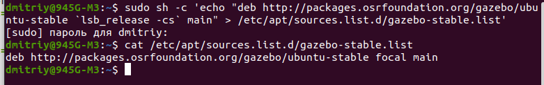

Gazebo
Gazebo
Ссылки: Занятие № 7. Gazebo
Сурцуков М.М. Вводное руководство по работе с Gazebo , М
Rviz не является единственным способом визуализировать информацию в ROS. Ещё одним способом отобразить визуально состояение системы является пакет Gazebo. Конечно, нет необходимости разрабатывать и пользоваться двумя пакетами, которые выполняют одинаковые функции, и говорить о том, что это два равноценных способа визуализации неверно. На самом деле Gazebo - это немного большее, чем просто визуализатор; это целый симулятор мира с описанной физикой. Кроме того, в gazebo основными объектами являются не точки и линии, а трёхмерные объекты, обычно более или менее чётко нарисованные (вместо условных точек и сфер в Rviz).
Основная цель симулятора - демострировать результат работы программы в виде, удобном для восприятия. Для описания внешнего вида объектов используется язык разметки xml. Некоторые объекты уже описаны и могут быть скачаны с официального сайта gazebo. Однако, объекты можно создавать самостоятельно из простых фигур, типа кубов, сфер и прочих.
Установка Gazebo
Gazebo является отдельным пакетом, который может быть использован независимо от ROS. В этом случае необходимо писать «скрипты», управляющие поведением объектов в симуляторе. Однако, возможно использовать Gazebo и совместно с ROS.
Для того, чтобы начать работу, необходимо установить последнюю версию Gazebo:
curl -ssL http://get.gazebosim.org | sh
Такая команда установит самую полную версию Gazebo. Если необходима ручная настройка компонентов, можно воспользоваться step-by-step инструкцией на сайте официального разработчика http://gazebosim.org/tutorials?tut=install_ubuntu&cat=install. Важно отметить, что модели роботов не будут скачаны из общего хранилища. Их необходимо скачивать отдельно. Интерфейс Gazebo позволяет это делать «на лету», то есть при первом обращении к объекту, если он не будет найден в системе, будет предпринята попытка скачать объект с таким именем из базы данных. После скачивания, текстуры и xml объекта будут располагаться в ~/.gazebo/models.
Для запуска Gazebo независимо от ROS достаточно в терминале вызвать:
gazebo
При этом появится пустой мир, в который можно добавлять объекты, двигать их, задавать освещение и прочее. Для того, чтобы связать Gazebo и ROS, необходимо скачать дополнительные пакеты:
sudo apt-get install ros-noetic-gazebo-ros-pkgs ros-noetic-gazebo-ros-control
Теперь можно вызвать:
roscore && rosrun gazebo_ros gazebo
или
roslaunch gazebo_ros empty_world.launch
На данный момент существует два стандарта описания роботов: .sdf и .urdf; первый является более новым и более удобным для использования, поэтому большинство объектов на данный момент существует именно в формате .sdf.
После размещения робота в мире его нельзя подписать на какой-то топик, как это было сделано в rviz. Для взаимодействия со всеми объектами gazebo использует один топик gazebo/set_model_state. При этом в передаваемом сообщении указывается имя объекта, которому оно адресовано. Из этого следует, что одновременно в мире не может существовать двух объектов с одинаковым именем. Отличие gazebo от rviz в этом моменте заключается в том, что rviz в случае прихода сообщения с просьбой создания объекта с существующим идентификатором создаст новый объект и удалит старый, а gazebo проигнорирует просьбу о создании.
Управление положением объекта происходит через топик gazebo/set_model_state или через одноимённый сервис. Различие в управлении через топик или через сервис в типе передаваемого сообщения и в наличии или отстутствии подтверждения о приёме сообщения.
Интерес представляет сообщение, которое передаётся в топик gazebo/set_model_state. оно имеет три поля:
- model_name – имя объекта
- pose – абсолютное положение робота
- twist – относительное изменение положения
Следует отметить, что, приняв сообщение с непустыми значениями pose и twist, робот будет использовать только положение pose; twist используется только как справочная информация, например, для лога.
step-by-step инструкция с сайта официального разработчика http://gazebosim.org/tutorials?tut=install_ubuntu&cat=install.
Устанавливать буду классический gazebo11 со страницы Install Gazebo using Ubuntu packages.
Есть несколько способов установки Gazebo:
- Как написано, используя ubuntu пакеты на этой странице скачиваем архивы и потом распаковываем в бинарные пакеты.
- Одной командой:curl -sSL http://get.gazebosim.org | sh и потом выполнить команду gazebo
- Шаг за шагом, буду его использовать:
- Установим доступ к репозиторию packages.osrfoundation.org:
sudo sh -c 'echo "deb http://packages.osrfoundation.org/gazebo/ubuntu-stable `lsb_release -cs` main" > /etc/apt/sources.list.d/gazebo-stable.list'
Можем проверить, что путь к репозиторию записан и правильно:
cat /etc/apt/sources.list.d/gazebo-stable.list
Если всё верно, то увидим:

- Установка ключей на свой компьютер:
wget https://packages.osrfoundation.org/gazebo.key -O - | sudo apt-key add -

- Установка Gazebo:
Обновим debian базу данных:sudo apt-get update
Теперь установим Gazebo 11:
sudo apt-get install gazebo11
Будет установлен пакет gazebo11 самой новой версии (11.14.0-1~focal)
Дополнительно нужно установить еще один пакет:
sudo apt-get install libgazebo11-dev
У меня был уже установлен пакет libgazebo11-dev самой новой версии (11.14.0-1~focal)
- Проверяем: gazebo
У меня не открылся:

Видимо всё же проблема в видеокарте.